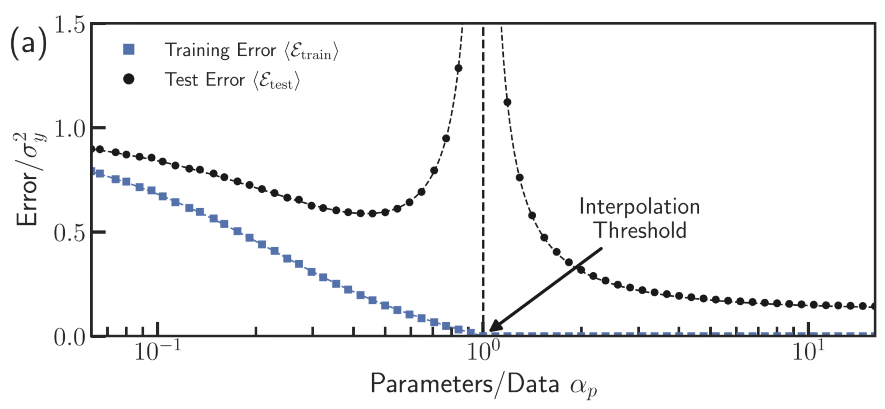
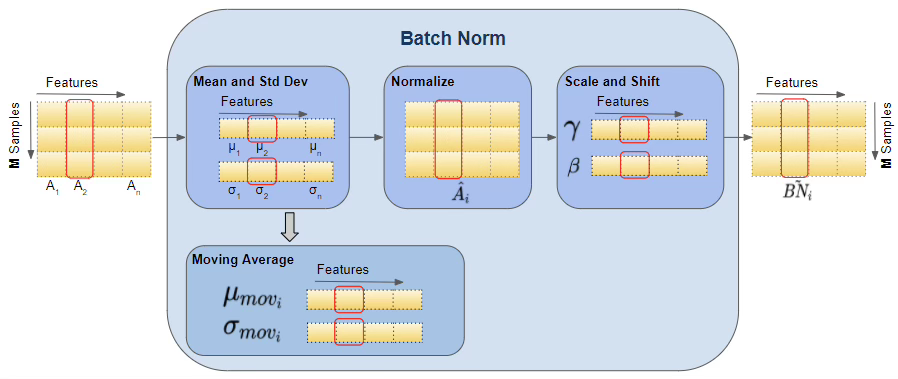

MLDL 딥러닝
1 신경망은 왜 overfit이 잘 되는가
딥러닝 모델은 놀라울 정도로 높은 표현력을 가지며, 동시에 매우 쉽게 과적합된다. 이 현상은 단순히 “데이터가 적어서” 또는 “모델이 복잡해서”라는 설명만으로는 충분하지 않다.
- 신경망은 구조적으로 과적합되기 쉬운 모델이다.
- 이는 파라미터 수, 자유도, 고차원 통계 환경의 결합된 결과이다.
- 딥러닝의 일반화는 명시적 정규화보다 암묵적 정규화에 크게 의존한다.
- 과적합은 적합의 문제가 아니라 함수 선택의 문제이다.
이 장에서는 신경망이 구조적으로 과적합되기 쉬운 이유를 파라미터 수와 자유도, 고차원 통계 환경, 그리고 암묵적 정규화라는 관점에서 통계적으로 해석한다. 이를 통해 딥러닝에서의 과적합을 “훈련오차가 작다”는 현상이 아니라, 어떤 함수를 선택했는가의 문제로 재정의한다.
1.1 파라미터 수와 자유도
1.1.1 신경망의 파라미터 규모
완전연결 신경망에서 파라미터 수는 층 수와 노드 수에 따라 급격히 증가한다. 입력 차원이 \(p\), 은닉층 노드 수가 \(h\), 출력 차원이 1인 단일 은닉층 신경망의 경우, 파라미터 수는 대략 \((p+1)h + (h+1)\)로 주어진다.
실제 딥러닝 모델에서는 파라미터 수가 표본 크기 \(n\)보다 훨씬 커지는 경우가 일반적이다.
\[\text{파라미터 수} \gg n\]
이것이 과잉 매개변수화(overparameterization)의 전형적인 특징이며, 신경망이 데이터를 완벽히 “기억”할 수 있는 구조적 이유이다.
1.1.2 자유도의 통계적 의미
통계학에서 자유도는 데이터에 얼마나 독립적으로 적응할 수 있는지를 나타낸다. 선형회귀에서는 자유도가 파라미터 수와 거의 일치한다. 그러나 신경망에서는 파라미터 수와 유효 자유도가 일치하지 않는다. 활성화 함수, 네트워크 구조, 가중치 공유, 학습 알고리즘 등이 자유도를 왜곡한다.
그럼에도 불구하고 신경망은 극도로 높은 표현 자유도를 갖는다. 이는 신경망이 매우 다양한 함수들을 실현할 수 있음을 의미한다.
1.1.3 왜 훈련오차는 쉽게 0이 되는가
신경망은 임의의 레이블 할당에도 완벽히 적합할 수 있으며, 노이즈를 포함한 데이터까지 그대로 기억할 수 있다. 이는 신경망이 단순히 좋은 함수 근사기이기 때문이 아니라, 과잉 매개변수화된 구조를 갖기 때문이다.
즉, 훈련오차가 0이 되는 현상 자체는 딥러닝에서 문제의 증거가 아니라, 구조적으로 예상되는 결과다.
1.2 고차원 통계 관점의 딥러닝
1.2.1 고차원 영역의 통계적 특성
딥러닝은 전형적으로 표본 수 \(n\)보다 파라미터 수 \(p\)가 훨씬 큰 영역에서 작동한다.
\[p \gg n\]
이 영역에서는 고전적 통계 직관이 붕괴한다. 추정량의 일관성은 보장되지 않으며, 분산은 매우 커지고, 훈련 성능과 일반화 성능 사이의 괴리는 커진다. 즉, 딥러닝은 고차원 통계의 극단적인 영역에서 작동하는 학습 체계이다.
1.2.2 보간(interpolation) 영역과 double descent
최근 이론은 모델 복잡도가 증가함에 따라 테스트오차가 감소했다가 증가한 뒤, 다시 감소하는 현상을 설명한다. 이를 double descent 현상이라 한다. 딥러닝 모델은 종종 훈련오차가 거의 0이 되는 보간 영역에서 학습된다.
이는 전통적 통계에서 기대했던 “과적합 이후 성능 악화”라는 단순한 직관과 충돌한다. 즉, 훈련오차가 0이라는 사실만으로 일반화 실패를 단정할 수 없다.

| 복잡도 구간 | 테스트 오차 | 설명 |
|---|---|---|
| \(d < n\) (과소 매개변수화) | U자형 | 전형적인 편향-분산 절충 |
| \(d \approx n\) (보간 임계점) | 급격히 상승 | 해가 불안정, 분산 폭발 |
| \(d > n\) (과잉 매개변수화) | 다시 하강 | 최소-노름 해 선택으로 분산 감소 |
1.2.3 고차원에서의 직관적 설명
고차원 공간에서는 동일한 훈련 데이터에 완벽히 적합하는 함수가 매우 많다. 그러나 이들 함수의 일반화 성능은 크게 다를 수 있다. 신경망 학습은 이 중 하나의 함수를 선택하는 과정이며, 과적합은 적합 실패가 아니라 잘못된 함수 선택의 결과로 이해해야 한다.
1.3 암묵적 정규화 (Implicit Regularization)
1.3.1 명시적 정규화 없이도 일반화가 되는 이유
실제 딥러닝에서는 L1이나 L2 정규화를 강하게 사용하지 않아도 테스트 성능이 상당히 우수한 경우가 많다. 이는 학습 과정 자체가 암묵적인 정규화 역할을 수행하기 때문이다.
1.3.2 암묵적 정규화의 원천
신경망 학습 과정에는 여러 암묵적 제약이 존재한다.
| 요소 | 암묵적 제약 효과 |
|---|---|
| SGD | 노름이 작은 해를 선호하는 경향 |
| 초기화 방식 | 함수 공간에서의 출발점 제한 |
| 조기 종료 | L2 정규화와 유사한 효과 |
| 배치 크기 | 학습 잡음 조절 → 탐색 가능 해 영역 제한 |
이러한 요소들은 모두 가능한 해 중에서 상대적으로 덜 복잡한 해를 선택하도록 유도한다.
1.3.3 통계적 해석
암묵적 정규화는 명시적인 prior를 두지 않더라도, 학습 알고리즘 자체가 prior의 역할을 수행한다는 의미로 해석할 수 있다. 즉, 딥러닝에서의 학습은 손실함수와 최적화 알고리즘의 결합으로 정의되며, 정규화는 이 중 최적화 과정에 숨어 있다.
1.4 과적합의 정리
신경망이 과적합되기 쉬운 이유는 다음 요인들이 동시에 작동하기 때문이다.
- 과잉 매개변수화: 매우 큰 자유도를 가진다.
- 고차원 통계 영역: 고전적 일반화 직관이 성립하지 않는다.
- 명시적 제약 부재: 데이터가 조금만 부족해도 즉시 과적합이 발생한다.
- 암묵적 정규화의 가변성: 설정과 학습 조건에 따라 일반화 성능이 크게 달라질 수 있다.
과적합은 “훈련오차가 작다”는 현상이 아니라, 어떤 함수를 선택했는가에 대한 문제이다.
딥러닝의 일반화는 적합 자체보다, 방대한 함수 공간 중 어떤 해를 선택하도록 유도했는가에 의해 결정된다.
2 Cross-Entropy와 MLE의 연결
- 딥러닝 분류 손실은 Cross-Entropy이며, 이는 로그우도의 음수이다.
- Cross-Entropy 최소화는 확률모형의 최대우도추정(MLE)과 동치이다.
- 신경망의 출력은 분류 결과가 아니라 확률 예측이다.
- 분류 결정, 성능지표, 손실함수는 서로 다른 역할을 가진다.
- 딥러닝 분류는 본질적으로 통계적 추정 문제이다.
딥러닝 분류에서 가장 널리 사용되는 손실함수는 Cross-Entropy이다. 이 손실은 흔히 분류용 손실로 소개되지만, 통계적으로는 확률모형의 최대우도추정과 정확히 대응된다. 즉, 딥러닝 분류 학습은 본질적으로 조건부 확률모형의 추정 문제이다.
이 장에서는 딥러닝 분류 손실의 구조를 확률모형 관점에서 해석하고, 신경망 출력이 의미하는 바를 통계적으로 정리한다. 이를 통해 손실함수, 확률 출력, 분류 결정, 성능지표의 역할을 명확히 분리한다.
2.1 딥러닝 분류 손실의 구조
2.1.1 다중 분류의 설정
입력 \(x\)에 대해 클래스 \(y \in \{1,\ldots,K\}\)를 예측하는 문제를 고려하자. 신경망은 마지막 층에서 점수 벡터 \(z(x) = (z_{1},\ldots,z_{K})\)를 출력한다. 이 점수는 softmax 함수를 통해 확률로 변환된다.
\[p_{k}(x) = \frac{\exp(z_{k})}{\sum_{j=1}^{K}\exp(z_{j})}\]
이때 \(p_{k}(x)\)는 \(P(Y = k \mid X = x)\)로 해석된다.
2.1.2 Cross-Entropy 손실
원-핫 레이블 \(y\)에 대해 단일 관측치의 Cross-Entropy 손실은 다음과 같다.
\[\ell(y,p(x)) = -\sum_{k=1}^{K}\mathbf{1}(y = k)\log p_{k}(x)\]
표본 전체에 대해 평균을 취한 값이 학습의 목표 함수가 된다.
2.2 Cross-Entropy = 음의 로그우도
2.2.1 범주형 분포와 우도
다중 분류는 다음 확률모형을 전제한다.
\[Y \mid X = x \sim \text{Categorical}(p_{1}(x),\ldots,p_{K}(x))\]
이때 단일 관측치의 로그우도는
\[\log p(Y = y \mid X = x) = \sum_{k=1}^{K}y_{k}\log p_{k}(x)\]
2.2.2 MLE와 손실 최소화의 동치성
표본 전체의 로그우도를 최대화하는 문제: \[\max_{\theta}\sum_{i=1}^{n}\log p(y_{i} \mid x_{i};\theta)\]
이는 곧 Cross-Entropy 손실의 합을 최소화하는 문제와 수학적으로 동일하다.
\[\min_{\theta}\left(-\sum_{i=1}^{n}\log p(y_{i} \mid x_{i};\theta)\right) = \min_{\theta}\sum_{i=1}^{n}\ell(y_{i},p(x_{i}))\]
따라서 Cross-Entropy 최소화는 범주형 확률모형에 대한 최대우도추정이다.
2.3 확률 출력의 의미
2.3.1 신경망 출력은 점수가 아니라 확률이다
Softmax 출력 \(p_{k}(x)\)는 단순한 점수가 아니라, 클래스에 대한 불확실성을 정량화한 확률적 산출물이다. 이는 경계 근처 관측치의 애매함을 표현하고, 비용 민감 의사결정의 기반을 제공한다.
2.3.2 분류 결정과의 분리
분류는 확률 예측 위에 추가 규칙을 얹어 이루어진다. 예를 들어 \[\hat{y} = \arg\max_{k}p_{k}(x)\] 또는 비용을 고려한 임계값 규칙을 사용할 수 있다. 중요한 점은 Cross-Entropy가 확률을 학습하고, 분류 규칙은 그 확률을 사용하는 단계라는 사실이다. 이 둘을 혼동하면 성능지표 해석 오류가 발생한다.
2.3.3 Calibration과의 연결
| 구분 | Cross-Entropy | AUC |
|---|---|---|
| 평가 대상 | 확률의 정합성(calibration) | 순위 관계 |
| 과신에 대한 반응 | 강하게 페널티 부과 | 민감하지 않음 |
| 활용 맥락 | 확률 보정, 의사결정 | 분류 성능 비교 |
Cross-Entropy는 잘못된 예측에 대해 과신할수록 큰 페널티를 부과하며, 과신을 강하게 억제한다. 이 점에서 순위만을 평가하는 AUC와 다른 정보를 제공한다.
2.4 신경망의 통계적 해석
신경망은 유연한 확률모형이다. 딥러닝 분류기는 다음과 같이 해석할 수 있다. \[p(y \mid x) = \text{Softmax}(f_{\theta}(x))\]
즉, 신경망은 규칙 기반 분류기가 아니라, 매우 유연한 조건부 확률모형이다.
2.4.1 로지스틱 회귀의 일반화
이진 분류에서 Cross-Entropy는 로지스틱 회귀의 손실과 동일하다. 다중 분류에서 softmax와 Cross-Entropy는 다항 로지스틱 회귀에 해당한다. 신경망은 이 구조를 비선형 함수 공간으로 확장한 것이다.
2.4.2 정규화와 베이즈 관점의 연결
명시적·암묵적 정규화는 파라미터에 대한 사전적 제약으로 해석할 수 있으며, 이는 최대사후확률 추정(MAP)의 흔적이다. 이 관점에서 딥러닝 학습은 손실함수와 최적화 과정의 결합으로 정의된다.
2.5 흔한 오해 정리
| 오해 | 올바른 이해 |
|---|---|
| Cross-Entropy는 단순한 분류 손실 | 로그우도의 음수이며, 확률모형의 추정 기준 |
| Softmax 출력은 점수 | 조건부 확률 \(P(Y=k\mid X=x)\) |
| 손실함수 = 분류 성능 지표 | 손실, 지표, 임계값은 서로 다른 역할 수행 |
| 훈련 손실이 낮으면 분류기가 좋다 | 분류 성능은 확률을 어떻게 사용하는지에 달림 |
| Cross-Entropy와 AUC는 같은 정보 | Cross-Entropy는 calibration, AUC는 순위 평가 |
3 Dropout과 Batch Normalization 통계적 해석
| 기법 | 통계적 역할 | 핵심 메커니즘 |
|---|---|---|
| Dropout | 불확실성 주입 | 확률적 뉴런 제거 → 모델 평균화 |
| BatchNorm | 분포 안정화 | 미니배치 정규화 → 내부 공변량 변화 억제 |
두 기법 모두 명시적 정규화 항 없이도 일반화 성능을 개선하는 통계적 장치이다. 딥러닝의 성능은 구조뿐 아니라 확률적 학습 장치의 결과이다.
딥러닝에서 Dropout과 Batch Normalization(BatchNorm)은 거의 표준처럼 사용된다. 그러나 이 기법들은 흔히 학습을 잘 되게 하는 요령이나 성능을 올려주는 테크닉으로만 소개된다. 통계적 관점에서 보면, Dropout과 BatchNorm은 불확실성과 분포 안정성을 다루는 확률적 장치이며, 신경망의 일반화 성능을 설명하는 핵심 요소이다.
이 장에서는 Dropout과 BatchNorm을 각각 불확실성 주입과 분포 안정화라는 관점에서 해석하고, 이들이 어떻게 암묵적 정규화로 작동하는지를 통계적으로 정리한다.
3.1 Dropout의 불확실성 해석
Dropout은 학습 과정에서 각 뉴런을 확률적으로 제거한다. 은닉층의 출력 \(h\)에 대해, 학습 시에는 다음과 같은 연산이 적용된다.
\[\tilde{h} = m \odot h,\quad m_{j} \sim \text{Bernoulli}(1-p)\]
- \(p\): 드롭아웃 비율(뉴런이 제거될 확률)
- \(1-p\): 유지 확률(keep probability)
- 학습 시: 일부 뉴런을 0으로 만들되, 남은 뉴런을 \(\frac{1}{1-p}\)만큼 스케일업하여 기대값 \(\mathbb{E}[\tilde{h}] = h\)를 유지
- 테스트 시: 드롭아웃 없이 전체 뉴런 사용(스케일은 학습 때 이미 반영)
이 과정은 의도적인 무작위성을 학습에 도입한다.
3.1.1 단순한 규제가 아닌 이유
Dropout을 단순한 과적합 방지 기법으로 설명하면 핵심을 놓친다. Dropout의 본질은 파라미터와 표현에 대한 불확실성을 학습 과정에 주입하는 데 있다. 이는 파라미터를 하나의 값으로 고정하지 않고, 여러 가능한 모델을 평균내는 효과를 만든다.
3.1.2 모델 평균화 관점
Dropout 학습은 서로 다른 서브네트워크를 반복적으로 학습하는 과정으로 해석할 수 있다. 테스트 시의 예측은 이들 서브네트워크의 평균 예측을 근사한다. 이 관점에서 Dropout은 앙상블의 확률적 근사이며, 베이즈 관점에서는 사후 예측 평균과 유사한 역할을 한다.
3.1.3 Dropout과 불확실성
- 표현 수준의 불확실성 반영: 어떤 뉴런 조합이 최적인지 불확실
- 특정 경로에 대한 과의존 억제: 특정 뉴런·경로에 과도하게 의존하는 것을 방지
- 함수 선택의 다양성 확보: 다양한 서브네트워크를 학습하여 편향 감소
따라서 Dropout은 암묵적 베이즈 추론의 흔적으로 해석할 수 있다.
3.2 Batch Normalization과 분포 안정화
3.2.1 BatchNorm의 기본 연산
BatchNorm은 각 미니배치에서 활성값을 정규화한다.
\[\hat{h} = \frac{h - \mu_{B}}{\sqrt{\sigma_{B}^{2} + \epsilon}},\qquad y = \gamma\hat{h} + \beta\]
여기서 \(\mu_{B}\)와 \(\sigma_{B}^{2}\)는 미니배치 평균과 분산이며, \(\gamma\)와 \(\beta\)는 학습 가능한 재조정 파라미터이다.

3.2.2 내부 공변량 변화의 통계적 의미
BatchNorm의 동기는 흔히 내부 공변량 변화(internal covariate shift)의 감소로 설명된다. 통계적으로 이는 각 층 입력 분포의 위치와 스케일 변동을 억제하고, 학습 과정에서의 분포 불안정성을 줄이는 것을 의미한다. 즉, BatchNorm은 조건부 분포를 강제로 안정화시키는 장치이다.
3.2.3 BatchNorm은 왜 정규화인가
BatchNorm은 L1이나 L2 정규화처럼 파라미터 크기를 직접 제한하지 않는다. 대신 활성값의 분포를 제어함으로써 다음 효과를 낸다.
- 기울기 폭주·소실 완화: 활성값이 안정적인 범위에 유지됨
- 최적화 경로 안정화: 더 큰 학습률 사용 가능
- 학습률에 대한 민감도 감소: 하이퍼파라미터 튜닝 부담 경감
3.2.4 확률적 효과
미니배치 평균과 분산은 표본 추정량이므로, BatchNorm은 본질적으로 확률적 잡음을 학습에 주입한다. 이로 인해 BatchNorm은 Dropout과 유사한 정규화 효과를 갖게 된다.
3.3 일반화 성능과의 관계
3.3.1 Dropout과 일반화
Dropout은 특정 경로에 대한 의존을 줄이고, 표현의 분산을 증가시키며, 과도한 신뢰를 억제함으로써 일반화를 돕는다. 이는 암묵적 정규화의 전형적인 사례이다.
3.3.2 BatchNorm과 일반화
BatchNorm의 일반화 효과는 간접적이다. 최적화가 쉬워지면서 더 나은 해에 도달할 가능성이 커지고, 분포 안정화를 통해 학습 불안정성이 감소하며, 배치 기반 잡음으로 인해 규제 효과가 발생한다. 즉, BatchNorm은 일반화를 직접 강제하기보다 일반화 가능한 해를 찾기 쉽게 만든다.
3.3.3 Dropout과 BatchNorm의 대비
Dropout은 불확실성을 통해 함수 공간을 넓게 탐색하도록 유도하는 반면, BatchNorm은 학습 경로를 안정화하여 탐색을 효율적으로 만든다. 두 기법은 서로 다른 방식으로 일반화를 지원한다.
3.4 통합적 해석
Dropout과 BatchNorm은 고차원·과잉매개변수화된 신경망에서 어떤 함수가 선택되는가라는 동일한 문제를 서로 다른 방식으로 해결한다. Dropout은 확률적 제거를 통해 함수 공간을 넓게 탐색하고, BatchNorm은 분포 안정화를 통해 탐색 경로를 제어한다.
이 둘은 모두 명시적 정규화 항이 없는 상태에서도 일반화 성능을 개선하는 통계적 장치이다.
딥러닝의 일반화는 구조적 설계뿐 아니라, 학습 과정에 내재된 확률적 메커니즘의 결과로 이해할 수 있다.
- 어떤 손실함수를 쓰는가 → Cross-Entropy는 MLE와 동치
- 어떤 정규화를 쓰는가 → 명시적(L1/L2) + 암묵적(SGD, 초기화, 조기 종료)
- 어떤 확률적 장치를 쓰는가 → Dropout(불확실성), BatchNorm(안정화)
세 가지가 결합될 때 딥러닝은 고차원에서도 일반화할 수 있는 모델이 된다.